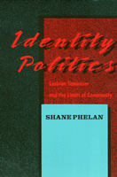

<body bgcolor="#FFFFFF" text="#000000" link="#0000FF" vlink="#CC0000" alink="#CC0000"><center><hr width="350" size="1" align="center" noshade>Tracing the uneasy relationship of lesbian-feminism with the Women's Movement and gay rights groups<hr width="350" size="1" align="center" noshade><p><a href="https://cdcshoppingcart.uchicago.edu/Cart/ChicagoBook.aspx?ISBN=9780877226512&&PRESS=temple" target="_top">Buy this book!</a> | <a href="https://cdcshoppingcart.uchicago.edu/Cart/Cart.aspx?PRESS=temple" target="_top">View Cart</a> | <a href="https://cdcshoppingcart.uchicago.edu/Cart/Cart.aspx?PRESS=temple" target="_top">Check Out</a></p><p></p></center><!--none//--><h1>Identity Politics</h1>
<H2>Lesbian Feminism and the Limits of Community</H2>
<h3>Shane Phelan</h3>
<P>cloth 0-87722-651-2 $60.50, Oct 89, <FONT COLOR=#990033>Available</FONT>
<br>paper 0-87722-902-3 $27.95, Aug 91, <FONT COLOR=#990033>Out of Stock Unavailable</FONT>
<br>Electronic Book 1-43990-412-X $29.95 <FONT COLOR=#990033>Available</FONT>
<BR> 256 pp
</P><BLOCKQUOTE><I>"At a time when abstract theory is so abundant, <I>Identity Politics</I> is a welcome breath of fresh air for its use of theory to illuminate movement&#151building and action.... Phelan's book will be very useful for the feminist movement in the 1990s, helping to locate its politics in a broader framework than the imperative of women working together."</I>
<br>&#151<b><I>NWSA Journal</I></b><I></I></BLOCKQUOTE>
<p>"Lesbian feminism began and has fueled itself with the rejection of liberalism.... In this rejection, lesbian feminists were not alone. They were joined by the New Left, by many blacks in the civil rights movement, by male academic theorists.... What all these groups shared was an intense awareness of the ways in which liberalism fails to account for the social reality of the world, through a reliance upon law and legal structure to define membership, through individualism, through its basis in a particular conception of rationality."
<p>In tracing how lesbian feminism came to be defined in uneasy relationships with the Women�s Movement and gay rights groups, Shane Phelan explores the tension between liberal ideals of individual rights and tolerance and communitarian ideals of solidarity. The debate over lesbian sado-masochism&#151an expression of individual choice or pornographic, anti-feminist behavior?&#151is considered as a test case.
<p>Phelan addresses the problems faced by "the woman-identified woman" in a liberal society that presumes heterosexuality as the biological, psychological, and moral standard. Often silenced by laws defining their sexual behavior as criminal and censured by a medical establishment that persists in defining homosexuality as perversion, lesbians, like blacks and other groups, have fought to have the same rights as others in their communities and even in their own homes. Lesbian feminists have also sought to define themselves as a community that would be distinctly different, a community that would disavow the traditional American obsession with individual advancement in the world as it is.
<p>In this controversial study of political philosophy and the women�s movement, Phelan argues that "the failure to date to produce a satisfying theory and program for lesbian action is reflective of the failure of modern political thinking to produce a compelling, nonsuspect alternative to liberalism."
<BR>&nbsp;<h2>Reviews</h2>
<p><I>"This is an extremely exciting book. Phelan's argument against constituting unified categories into which concrete differences disappear is very powerfully presented and strikes an important chord within ongoing feminist debates about the need to respect difference versus the need to act in concert. Phelan does not resolve this dilemma, but she elucidates it brilliantly. This book will make a substantial contribution to some major debates in contemporary feminist theory, and in the larger sphere of political theory."</I>
<br>&#151<b>Kathy E. Ferguson</b>, University of Hawaii at Manoa
<BR>&nbsp;<h2>Contents</h2><P>
<p>Acknowledgments
<br>1. Liberalism and Its Problems
<br>2. Lesbianism and Medical Discourse
<br>3. The Woman-Identified Woman
<br>4. Definition and Community
<br>5. Pornography: Male Violence and Female Desire
<br>6. Sadomasochism and the Meaning of Feminism
<br>7. The Limits of Community
<br>8. Rethinking Identity Politics
<br>Notes
<br>Bibliography
<br>Index
</P><BR>&nbsp;<H2>About the Author(s)</H2>
<P><b>Shane Phelan</b> is Assistant Professor of Political Science at the University of New Mexico.</P>
<BR><H2>Subject Categories</H2>
<p><A HREF="/tempress/women.html" TARGET="_top">Women's Studies</a>
<BR><A HREF="/tempress/political.html" TARGET="_top">Political Science and Public Policy</a>
<BR><A HREF="/tempress/philosophy.html" TARGET="_top">Philosophy and Ethics</a>
</p>
<BR><h2 class="inpageheading">In the series</H2>
<P><I><a href="http://www.temple.edu/tempress/women_political.html" onMouseOver="window.status='Click for other books in this series!'; return true;" onMouseOut="window.status=''; return true;" target="_top">Women in the Political Economy</a></i>, edited by Ronnie J. Steinberg.
</p><p>No longer active.<p><i>Women in the Political Economy</i>, edited by Ronnie J. Steinberg, includes books on women and issues of work, family, social movements, politics, feminism, and empowerment. It emphasizes women's roles in society and the social construction of gender and also explores current policy issues like comparable worth, international development, job training, and parental leave.</p>
<p align="center"><a href="https://cdcshoppingcart.uchicago.edu/Cart/ChicagoBook.aspx?ISBN=9780877226512&&PRESS=temple" target="_top">Buy this book!</a> | <a href="https://cdcshoppingcart.uchicago.edu/Cart/Cart.aspx?PRESS=temple" target="_top">View Cart</a> | <a href="https://cdcshoppingcart.uchicago.edu/Cart/Cart.aspx?PRESS=temple" target="_top">Check Out</a></p><p><font face="Arial" size="1"><a href="copyright.html" onMouseOver="window.status='Web Copyright Policy';return true;" onMouseOut="window.status=''" title="Web Copyright Policy">&copy;</a> 2015 <a href="http://www.temple.edu" target="new" onMouseOver="window.status='Link to Temple University home page';return true;" onMouseOut="window.status=''" title="Link to Temple University home page">Temple University</a>. All Rights Reserved. http://www.temple.edu/tempress/titles/604_reg.html</font></p>